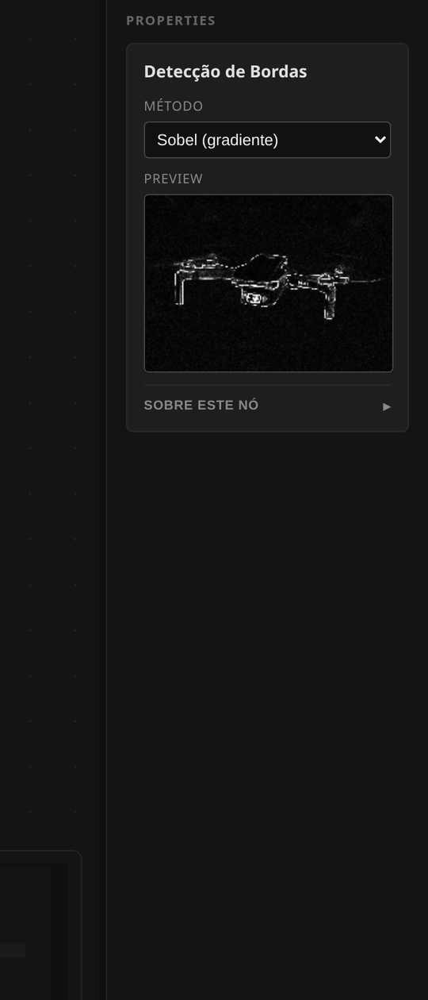
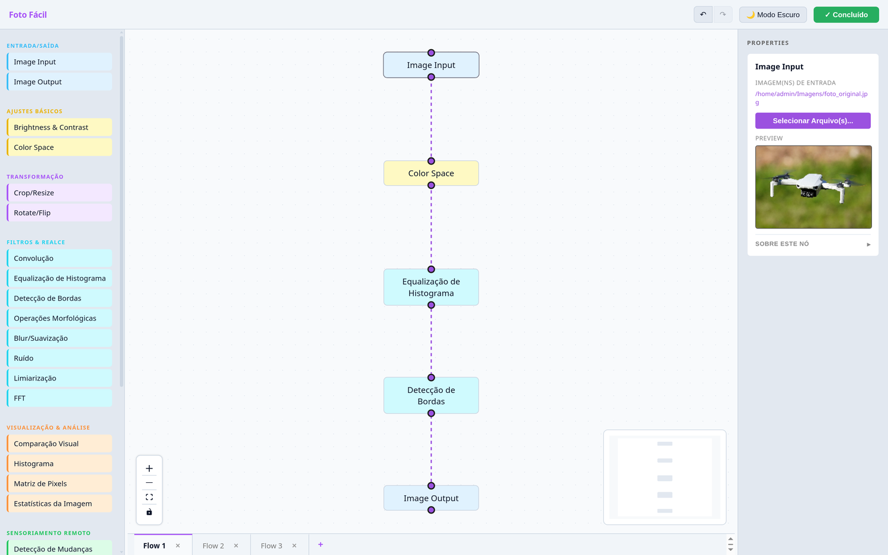
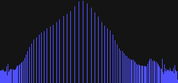
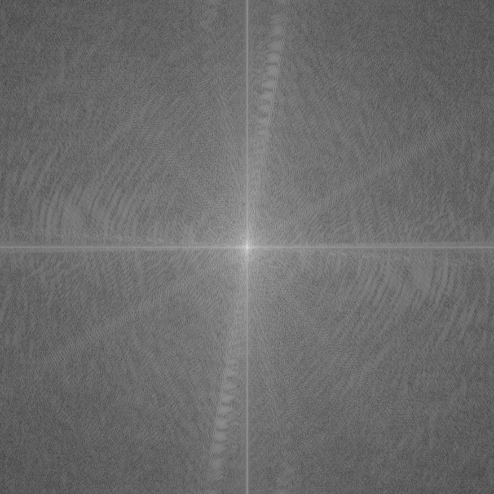
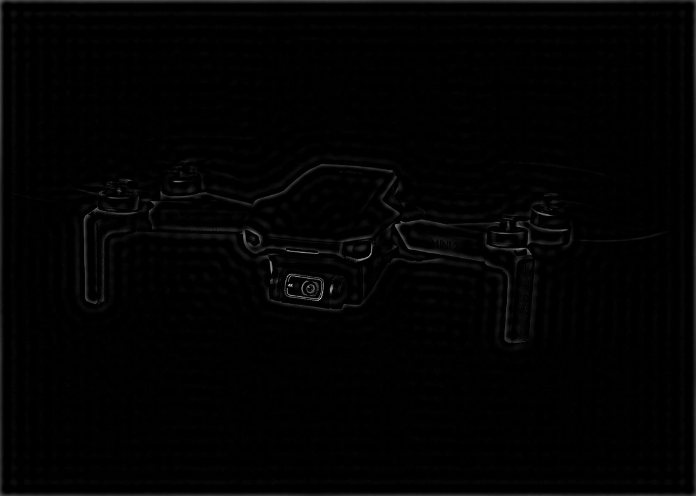

FotoFácil: um editor de imagens por nós para automatizar edições em lote sem programar
Ferramenta de código aberto em que o processamento de imagens é montado por blocos: você desenha o fluxo na tela, o sistema calcula a ordem de execução e aplica a mesma receita em milhares de arquivos.
Nathan Henrique Guimarães de Oliveira
IFSP · guimaraes.nathan@aluno.ifsp.edu.br
Ana Paula Abrantes de Castro Shiguemori
IFSP · anapaula.acs@ifsp.edu.br
Instituto Federal de Educação, Ciência e Tecnologia de São Paulo · Campus JacareíJECET 2026
RoteiroJECET 2026 · FotoFácil
Cinco blocos, na ordem do modelo do evento
O problema e o que já existe hoje, como o sistema foi construído, o que ele já faz na prática, o que isso responde e onde estão as bases.
IIntroduçãoContexto, problema, justificativa e objetivos
IIMetodologiaComo o editor por nós foi construído e testado
IIIResultadosO sistema rodando e cinco resultados de processamento
IVConclusãoO que os resultados respondem, limites e próximos passos
VReferênciasAs bases usadas no trabalho
A pergunta que guia a apresentação
Dá para processar imagem em lote, de forma reprodutível, sem escrever código?
I
Introdução
O processamento de imagens está no cotidiano e na pesquisa: e ainda depende de código para virar rotina.
contextoproblemajustificativaobjetivos
Introdução · contexto e relevânciaJECET 2026 · FotoFácil
Uma imagem digital é uma matriz de números
Cada valor da matriz é a intensidade de um ponto. Processar imagem é aplicar contas sobre essa matriz: somar brilho, comparar vizinhos, filtrar frequências.
Cotidiano: ajustar uma foto, melhorar um documento escaneado, tratar a imagem de uma câmera.
Pesquisa: preparar, padronizar e ampliar milhares de imagens antes de treinar um modelo.
O ponto comum: o ajuste é sempre um algoritmo. Feito à mão, ele se repete e varia; descrito como fluxo, ele se reproduz.
1.100×785
o tamanho da foto usada nesta apresentação
~860 mil
valores de intensidade em cada imagem
95,3%
dos pixels mudam de valor depois da equalização
Imagem de referência do trabalho. Todas as figuras desta apresentação saem dos mesmos nós do FotoFácil, aplicados sobre ela.
Introdução · problema e justificativaJECET 2026 · FotoFácil
Automatizar em lote hoje exige programar
O que já existe
Editores gráficos e ferramentas visuais
GIMP e Photoshop: fazem lote, mas por uma linguagem de script própria: a automação só chega para quem programa.
n8n: automação visual comprovada, porém com nós genéricos de dados, sem processamento de imagem nativo.
Orange: programação visual de mineração de dados, com foco em tabelas e modelos, não em pixels.
O que isso custa
Quem não programa faz no braço
Abrir, ajustar, exportar. Repetir para cada arquivo.
O critério muda no meio do caminho e o lote deixa de ser comparável.
Na pesquisa, o esforço de preparar o dado compete com o próprio método.
A lacuna: automação visual, que já provou funcionar em outras áreas, não chegou ao processamento de imagens.
A proposta
Montar o processamento como um fluxo de blocos conectados: cada bloco é uma operação conhecida de processamento digital de imagens e a ligação entre eles define a ordem. O mesmo desenho roda em uma imagem ou em milhares.
Introdução · objetivosJECET 2026 · FotoFácil
O que o trabalho se propôs a fazer
Objetivo geral
Desenvolver um editor de imagens de código aberto em que o processamento é montado visualmente por nós, permitindo aplicar a mesma receita em lotes de imagens sem escrever código.
Objetivo 1
Montar sem código
Interface de arrastar e soltar que dispensa conhecimento de programação.
Objetivo 2
Repetir em lote
Executar o mesmo fluxo sobre muitos arquivos, com resultado previsível.
Objetivo 3
Cobrir PDI clássico
Do ajuste básico à análise: cor, filtros, bordas, frequência.
Objetivo 4
Servir à pesquisa
Preparar conjuntos de imagens para treinar modelos de IA.
palavras-chave do resumo aprovado
processamento de imagensprogramação visualautomação em lotearquitetura de software
II
Metodologia
Como o fluxo visual virou software: o grafo, a arquitetura em duas camadas e os testes antes do código.
grafo acíclico dirigidoGo + Electron/ReactWebSockettestes por pixel
Metodologia · modelo do processamentoJECET 2026 · FotoFácil
O desenho é a receita; o sistema calcula a ordem
Cada nó declara de quais nós depende. Com isso o backend monta um grafo acíclico dirigido, resolve a ordem com uma ordenação topológica e executa cada operação uma única vez, reaproveitando resultados que duas ramificações compartilham.
Regra 1
Cada operação roda uma vez, mesmo que dois caminhos precisem dela.
Regra 2
A ordem sai do próprio desenho: quem depende vai depois.
Regra 3
Um ciclo (A depende de B que depende de A) é recusado antes de executar.
Metodologia · arquiteturaJECET 2026 · FotoFácil
Duas camadas, conversando em tempo real
Sem nuvem
Roda na máquina do usuário. Nenhuma imagem sai do computador.
Prévia viva
Cada mudança no fluxo devolve uma imagem de conferência.
Fluxos salvos
O desenho fica guardado e pode ser reaberto e reexecutado.
A interface em uso. O desenho à esquerda é o grafo; à direita, os parâmetros do nó selecionado e a prévia do resultado.
Metodologia · como um nó processaJECET 2026 · FotoFácil
Cada nó é um algoritmo da literatura, em Go
O nó recebe um contexto: as imagens e os parâmetros escolhidos na tela.
Ele lê somente as imagens dos nós ligados diretamente a ele.
Aplica a operação e devolve novas imagens ao contexto.
Nada é copiado para serviços externos: o cálculo é local, na biblioteca padrão do Go, sem depender do OpenCV.
Contrato que todo nó cumpre
type Node interface {
GetID() string
Process(ctx *ProcessContext) error
}
Um nó novo entra no sistema implementando esses dois métodos e ganhando um teste.
O que o nó declara
Traduzido para a tela
Operação e parâmetros
sliders, listas, caixas
Entradas ligadas a ele
linhas do desenho
Explicação técnica do algoritmo
texto de ajuda do nó
Efeito esperado no resultado
prévia em miniatura

O nó na prática. Parâmetros à vista, sem esconder a fórmula que está sendo aplicada.
Preparação de dados: augmentação e exportação rotulada para treino.
Quatro nós que não transformam a imagem
Histograma, matriz de pixels, estatísticas e comparação visual existem para explicar o que os outros fizeram. Em aula, são o que torna o efeito visível.
Metodologia · verificaçãoJECET 2026 · FotoFácil
Antes de codar, o resultado esperado
Desenvolvimento orientado a testes
Para cada operação, o teste vem primeiro: ele monta uma matriz conhecida, aplica o nó e compara pixel a pixel com o resultado esperado. Só então a implementação é escrita, até o teste passar.
Erro de arredondamento, borda ou canal aparece na hora, não na apresentação.
Mudar um nó sem quebrar outro deixa de depender de memória.
É o que permite afirmar que os resultados desta apresentação são os do algoritmo, não "mais ou menos" ele.
94
testes automatizados no núcleo
28
nós cobertos por verificação
Como o teste enxerga um nó
Entrada: matriz pequena e determinística.
Ação: o nó executa sobre ela.
Conferência: cada pixel do resultado é comparado com a matriz esperada.
Por que isso importa
Um resultado só vale como resultado se puder ser repetido e conferido. Em processamento de imagens, olhar a tela não basta: um pixel de diferença é um erro no cálculo.
III
Resultados
O sistema em execução e cinco resultados obtidos pelos próprios nós do FotoFácil.
a ferramenta na telarealce e contrastebordas e limiarfrequênciaruídodados para IA
Resultados · o sistema em execuçãoJECET 2026 · FotoFácil
O fluxo montado, o resultado na tela

Execução real, capturada da ferramenta. Entrada → escala de cinza → histograma; detecção de bordas → comparação visual; saída ao final do fluxo.
O que acontece ao rodar
A ordem é calculada a partir do desenho.
Cada nó processa e atualiza a prévia.
O resultado final é gravado pelo nó de saída.
Do teste para o lote
O mesmo fluxo vale para um arquivo ou para a pasta inteira: muda a entrada, não a receita.
E se eu errar um nó?
Trocar um parâmetro e rodar de novo leva segundos. Errar e refazer passa a ser parte do trabalho, não um prejuízo.
Resultados · 1 de 5 · cor e realceJECET 2026 · FotoFácil
Escala de cinza e equalização
originalapós equalização
arraste para comparar · resultado produzido pelo nó de equalização do FotoFácil

Histograma: quantos pixels existem em cada nível de intensidade. A equalização redistribui essa distribuição.
Medida
Depois
Intensidade média
128,44
Mediana
131,00
Desvio padrão (contraste)
73,40
MSE / PSNR vs. cinza
1950,91 / 15,23 dB
O desvio padrão mede o contraste: quanto maior, mais a imagem usa extremos. É esse número que muda quando a equalização funciona.
Resultados · 2 de 5 · bordas e limiarJECET 2026 · FotoFácil
Encontrar contornos e separar o que é objeto
tons de cinza
Ponto de partida: a luminância de cada pixel, calculada pelo nó de espaço de cor.
O que esses resultados mostram
Bordas não são "contorno desenhado": são a variação entre vizinhos.
Limiarização decide o que é objeto usando o próprio histograma.
Morfologia corrige o que a limiarização deixou quebrado.
Leitura dos números
Sobel deixa 75% da área praticamente preta e apenas 5,3% dela passa da intensidade 25. Otsu deixa 22,5% em branco; a dilatação 5×5 eleva para 25,0%. Tudo medido na saída dos próprios nós, sobre a mesma imagem.
Resultados · 3 de 5 · domínio da frequênciaJECET 2026 · FotoFácil
Ver a imagem como soma de frequências

Espectro: o brilho no centro são as variações suaves; o que se afasta para as bordas são os detalhes finos.Passa-baixa (8% do raio): mantém o que varia devagar: a imagem fica suave, detalhes finos somem.

Passa-alta (8% do raio): mantém o que varia rápido: sobram contornos e 98,6% da área fica escura, abaixo de 40.
Por que isso é útil
Filtrar em frequência permite escolher o que interessa: suavizar ruído sem borrar tudo, ou realçar estrutura sem mexer no brilho geral. É a mesma lógica que aparece em compressão de imagem.
Custo e limite honesto
A transformada é calculada em uma grade de 2048×2048 e devolve um espectro de magnitude em escala logarítmica. Filtros abruptos (corte circular seco) produzem o serrilhado visível nas figuras: suavizar a transição é o próximo refinamento.
Resultados · 4 de 5 · ruído e recuperaçãoJECET 2026 · FotoFácil
Sujar de propósito para provar a limpeza
Referência: desvio padrão 37,5.Nó configurado em 6% de sal e pimenta: pontos isolados sobem o desvio para 43,3.Após mediana 3×3: o desvio volta a 37,3: a mediana despreza o ponto fora do padrão.A imagem por dentro: recorte 10×10 ampliado, com os valores de intensidade que o filtro realmente compara.
A ideia em uma frase
Filtro de média espalha o defeito para os vizinhos; a mediana devolve o valor do meio, então um ponto isolado desaparece sem borrar a imagem inteira.
Resultados · 5 de 5 · preparação de dadosJECET 2026 · FotoFácil
Da pasta de fotos ao conjunto de treino
entradarotaçãoespelhamentooutra variação
O nó de augmentação gera variantes da mesma imagem para ampliar o conjunto. Ele usa uma semente fixa: quem repetir o fluxo obtém exatamente as mesmas variantes. É a diferença entre "dados aumentados" e dados aumentados de forma reprodutível.
6 imagens de entrada, separadas em 60% treino, 20% validação e o restante teste, já em pastas que a maioria dos frameworks de treino lê de imediato.
Por que isso fecha o ciclo
O trabalho começou mostrando que preparar dados é o gargalo de quem pesquisa. Aqui o gargalo vira um nó: a mesma ferramenta que ajusta a foto também organiza o conjunto de treino.
IV
Conclusão
Os resultados respondem aos objetivos? O que ainda não está pronto e o que vem depois.
objetivos respondidoslimitespróximos passos
Conclusão · o que os resultados respondemJECET 2026 · FotoFácil
Objetivo por objetivo
Montar sem código
Atingido: os nós são ligados por arrastar e soltar e a ordem de execução é calculada pelo sistema. Nenhum resultado desta apresentação exigiu escrever código.
Repetir em lote
Atingido com uma ressalva: o fluxo é executado sobre conjuntos de imagens e a augmentação usa semente fixa, mas a execução é sequencial: o ganho vem da repetição, não do paralelismo.
Cobrir PDI clássico
Atingido: 28 nós, de brilho e contraste a Fourier, limiarização e morfologia, todos verificados por testes que comparam pixel a pixel.
Servir à pesquisa
Atingido: o conjunto exportado já sai dividido em treino, validação e teste, pronto para alimentar treinamento de modelos.
A resposta à pergunta do início
Sim: montando o processamento como fluxo, é possível aplicar a mesma edição a milhares de imagens sem programar, e ainda repetir exatamente o mesmo resultado depois.
Conclusão · limites e próximos passosJECET 2026 · FotoFácil
O que ainda não está pronto
Limites conhecidos
Execução sequencial: cada imagem passa por vez; lotes grandes levam tempo.
A IA do catálogo é heurística: conta e mede área de objeto, não é um modelo treinado.
Fluxo não é exportável: o desenho fica salvo na máquina, mas ainda não sai como arquivo para outra pessoa abrir.
Nós de sensoriamento remoto: dependem de imagens com bandas específicas, ainda não validados sobre dados reais de satélite.
Persistência: encontramos um caso em que o fluxo aberto pode ser gravado vazio antes de ser lido do banco: está registrado e é o primeiro item da fila.
Próximos passos
Corrigir a gravação do fluxo ativo e cobrir o caso com teste de persistência.
Processar o lote em paralelo, aproveitando máquinas com vários núcleos.
Exportar e importar o fluxo para que um método circule entre pessoas.
Suavizar a transição dos filtros de frequência, hoje com corte abrupto.
Ponto de honestidade
Nada aqui foi medido sem ser executado: os números saíram dos próprios nós do sistema, sobre a imagem mostrada. Onde falta validação, está escrito que falta.
V · Referências bibliográficasJECET 2026 · FotoFácil
Bases do trabalho
GONZALEZ, R. C.; WOODS, R. E.Digital Image Processing. 4. ed. Pearson, 2018.
OTSU, N. A threshold selection method from gray-level histograms. IEEE Transactions on Systems, Man, and Cybernetics, v. 9, n. 1, p. 62-66, 1979.
COOLEY, J. W.; TUKEY, J. W. An algorithm for the machine calculation of complex Fourier series. Mathematics of Computation, v. 19, n. 90, p. 297-301, 1965.
SOUSA, T. Dataflow programming: concept, languages and applications. 2012.
DEMŠAR, J. et al. Orange: data mining toolbox in Python. Journal of Machine Learning Research, v. 14, p. 2349-2353, 2013.
BECK, K.Test-Driven Development: By Example. Addison-Wesley, 2002.
GIMP DEVELOPMENT TEAM. Documentação de scripting e processamento em lote. Disponível em: gimp.org.
n8n. Documentação oficial de automação por fluxos. Disponível em: n8n.io.
Documentação técnica do próprio projeto: referência dos nós, mapa da arquitetura e guia de execução, publicados junto com o código-fonte.
Obrigado
Perguntas?
O FotoFácil é de código aberto. A ferramenta, a documentação dos 28 nós e o guia de execução estão no repositório do projeto.


 tons de cinza
tons de cinza